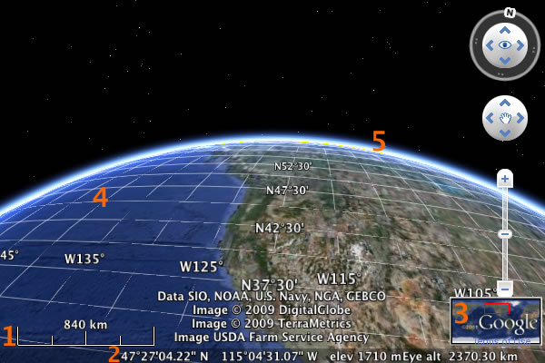

©2010 Google -
Code Home -
Terms of Service -
Privacy Policy -
Site Directory
Google Code offered in:
English -
Español -
日本語 -
한국어 -
Português -
Pусский -
中文(简体) -
中文(繁體)
Layers contain additional information that is draped over the base Google Earth imagery layer. Navigation controls allow the user to pan, tilt, and zoom using controls superimposed on the viewport.
By default, the terrain layer is the only layer displayed when the Google Earth Plugin first loads. Not all of the layers that are available in the Google Earth desktop client are available with the plugin. Available layers are:
LAYER_BORDERS - shows country and area borders, and place labels for cities, states, countries, oceans, etcLAYER_BUILDINGS - 3D buildingsLAYER_BUILDINGS_LOW_RESOLUTION - grey buildings (non-photorealistic). Note that this does not contain copies of photorealistic buildings; rather, it includes buildings that do not yet exist in the photorealistic buildings layer. As photorealistic versions of grey buildings are created, the buildings will be added to LAYER_BUILDINGS and removed from LAYER_BUILDINGS_LOW_RESOLUTION.LAYER_ROADS - displays roads and road namesLAYER_TERRAIN - 3D terrainTo enable a specific layer:
ge.getLayerRoot().enableLayerById(ge.LAYER_NAME, true);
To disable a layer:
ge.getLayerRoot().enableLayerById(ge.LAYER_NAME, false);
The Google Earth Plugin can display the sun as well as the Earth's atmosphere. The Sun casts shadows and appears in the sky in the correct location according to the specified time (see the Developer's Guide chapter on Time for more information); the atmosphere is displayed as gradiated blue coloring to mimic the scattering of light as it passes through the atmosphere.
To toggle the Sun in the plugin:
ge.getSun().setVisibility(true);
To toggle the atmosphere in the plugin:
ge.getOptions().setAtmosphereVisibility(true);

Navigation controls allow a user to move around in Google Earth, and include zoom, pan, tilt, scroll, and rotate controls. These can be always visible, never visible, or can be hidden until the user moves their mouse cursor over the controls' area in the plugin. To specify which behavior to display:
ge.getNavigationControl().setVisibility(ge.VISIBILITY_X);
The acceptable values are:
ge.VISIBILITY_SHOWge.VISIBILITY_HIDEge.VISIBILITY_AUTOThe navigation controls can be positioned at any corner of the Google Earth Plugin window. To do so, change the value of the x and y units to be relative to either the top or bottom of the window, and either the left or right.
ge.UNITS_PIXELS: interpreted as pixels from the left of bottom edge of the plugin windowge.UNITS_INSET_PIXELS: interpreted as pixels from the right or top edge of the plugin windowFor example, to move the controls to the bottom right of the window:
ge.getNavigationControl().getScreenXY().setXUnits(ge.UNITS_INSET_PIXELS); ge.getNavigationControl().getScreenXY().setYUnits(ge.UNITS_PIXELS);
Note: the navigation controls do not accept specific pixel values (e.g. KmlVec2.setX()) for positioning.
For an interactive example, visit the Earth API section of the Ajax APIs Playground: Show/Hide Navigation Controls.
Google Earth also provides a set of informational overlays that can be added to the plugin window. These overlays communicate information about the current viewport - latitude, longitude, altitude, etc.

1. setScaleLegendVisibility() |
Displays the current scale of the map. |
2. setStatusBarVisibility() |
Displays a status bar at the bottom of the Earth window, containing geographic coordinates and altitude of the terrain below the current cursor position, as well as the range from which the user is viewing the Earth. |
3. setOverviewMapVisibility() |
Displays an inset map of the entire world in the bottom right corner. The current viewport is displayed on the inset map as a red rectangle. |
4. setGridVisibility() |
Displays the lines of latitude and longitude on the globe. |
5. setAtmosphereVisibility() |
Displays scattered light in the Earth's atmosphere. |